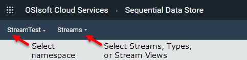

Share and unshare streams
Use these procedures to share or stop sharing streams of data with other communities.
Note. To share or unshare a stream, your role must have the Manage Permission privilege for that stream. By default any user who creates a stream has the Manage Permission privilege. To manage permissions for a role, use the Sequential Data Store > Streams feature.
Share streams
To perform this procedure you must have already defined streams.
- On the navigation bar, click Sequential Data Store.
- If necessary, select a namespace at top left.
 - If it is not already selected, select Streams at top left.
- Select one or more streams to share.
- Select More Options
 and select Share Stream from the drop-down menu.
and select Share Stream from the drop-down menu.
If you select multiple streams, a pane appears for managing streams. You can select Share Streams on that pane. - Click Select Communities.
A list of communities appears. - Select the communities with which you want to share streams and click Continue. If necessary, you can filter the list of communities by typing in the Filter Communities box.
- Click Continue. and then click Share. When prompted for confirmation, click Confirm.
All members of the selected communities are able to read data from the shared streams.
Unshare streams
- On the
Communitiesoverview page, find the community where you are sharing streams and click Details. - On the
Community Detailspage, click the Tenants tab. - Select your own tenant.
If you have shared streams, a Streams tab appears at right. - On the Streams tab, select the streams you want to unshare and click Unshare Streams. When prompted for confirmation, click Unshare.